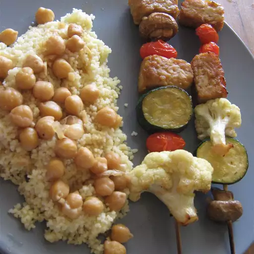

Tempeh Kabobs with Moroccan Couscous

These kabobs are delicious. Honey-soy marinade, paired with grilled vegetables.
Ingredients
- 1 (8 ounce) package tempeh, cut into 1/2 inch squares
- 16 fresh white mushrooms
- 1 medium eggplant, cut into 1 inch cubes
- 1 large red bell pepper, cut into 1 inch pieces
- 16 cherry tomatoes
- 8 tablespoons olive oil
- 4 tablespoons soy sauce
- 4 tablespoons teriyaki sauce
- 3 tablespoons honey
- 1 tablespoon grated fresh ginger root
- 1 tablespoon chopped fresh garlic
- salt and pepper to taste
- 2 cups vegetable broth
- 1 tablespoon grated fresh ginger root
- 1 teaspoon ground cumin
- salt to taste
- 1 cup dry couscous
- ¾ cup raisins
- ¾ cup drained canned chick-peas (garbanzo beans)
- 1 lemon
Steps
- Place tempeh, mushrooms, eggplant, red bell pepper, and cherry tomatoes in a large resealable plastic bag. In a mixing bowl, whisk together olive oil, soy sauce, teriyaki sauce, and honey; season with 1 tablespoon ginger, 1 tablespoon garlic, and salt and pepper to taste. Pour mixture over tempeh and veggies, seal, and shake to coat. Refrigerate for 2 hours.
- Preheat grill for medium-high heat. Thread tempeh and veggies on skewers. Reserve remaining marinade.
- Grill skewers, turning often to make sure everything is cooked evenly. These can also be done in the broiler.
- While grilling kabobs, combine vegetable stock, 1 tablespoon grated ginger, cumin, and salt. Bring to a light boil. Stir in couscous, raisins, and garbanzo beans; cover, and remove from heat. Let sit for five minutes, or until fluffy. Just before serving, squeeze lemon over couscous and stir. Serve kabobs with reserved marinade.